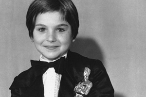

Tri filma dijele rekord za najviše ikada osvojenih nagrada. “Ben Hur” iz 1959. osvojio je 11 od mogućih 15 kategorija Oscara, a bio je nominiran u njih 14. Od tada su dodane još dvije kategorije pa je “Titanic” Jamesa Camerona 1997. osvojio 11 od mogućih 17 Oscara, baš kao i “Gospodar prstenova: Povratak kralja” redatelja Petera Jacksona iz 2003. godine.
| Ben Hur(1959.) | Titanic(1997.) | Gospodar Prstenova: Povratak kralja(2003.) |
|---|---|---|
Potpuna “grabež” Oscara u top 5 kategorija (najbolji film, redatelj, glavna ženska i
muška uloga te scenarij) dogodila se samo tri puta u povijesti.
Bili su to filmovi “Dogodilo se jedne noći” iz 1934., “Let iznad kukavičjeg
gnijezda” 1975. i “Kad jaganjci utihnu” iz 1991. godine.
Glumac Warren Beatty jedina je osoba u povijesti Filmske akademije koja je bila
nominirana kao najbolji producent, redatelj, scenarist i glumac, i sve to u istom
filmu.
| Dogodilo se jedne noći(1934.) | Let iznad kukavičjeg gnijezda(1975.) | Kad jaganjci utihnu(1991.) |
|---|---|---|
Walt Disney drži rekord po najviše individualnih Oscara. Za vrijeme života osvojio ih je 20, a posthumno još šest.
Što se glumaca tiče, najviše Oscara (3) dobila su tri različita glumca: Walter Brennan, Jack Nicholson i Daniel Day Lewis. U nominacijama prednjači Jack Nicholson sa čak 12 nominacija za Oscara.
Katharine Hepburn je pak glumica sa najviše Oscara od svih glumaca, osvojila je njih 4, i svo četvoro bilo je za najbolju glumicu. Za razliku od Katharine-ih 12 nominacija, još i danas aktivna glumica Meryl Streep ima titulu glumice s najviše nominacija, njih čak 14, no osvojila je jedan manje od Katharine.
| Walt Disney(22 Oscara, 49 nominacija) | Jack Nicholson (3 Oscara, 12 nominacija) | Katharine Hepburn (4 Oscara, 12 nominacija) |
|---|---|---|
Najmlađa osoba koja je dobila Oscar je Shirley Temple, koja je te davne 1934. imala pet godina, a dobila je tzv. počasnog Oscara za postignuće u nekoliko filmova. Inače najmlađa koja je dobila Oscara za najbolju sporednu žensku ulogu je Tatum O’Neal, koja je kipić primila 1973. kao desetogodišnjakinja za film “Mjesec od papira”.
Jessica Tandy najstarija je žena koja je dobila Oscara; za film “Vozeći Miss Daisy” 1989. kad je imala 80 godina.
| Shirley Temple(5 godina, Oscari 1934. počasni Oscar) | Tatum O'Neal (10 godina, Oscari 1973.) | Jessica Tandy (80 godina, Oscari 1989.) |
|---|---|---|
|  |